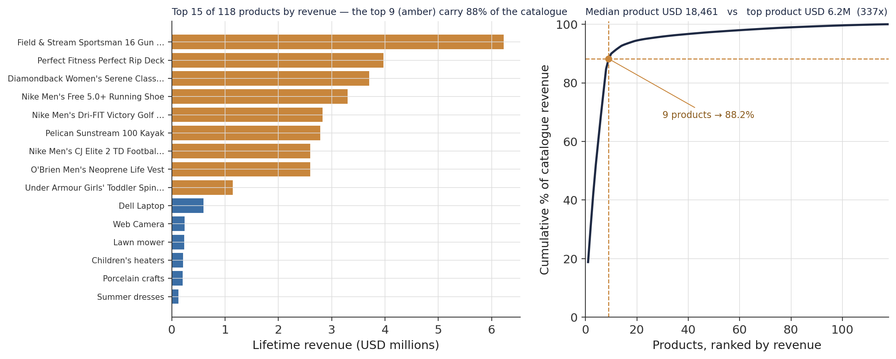
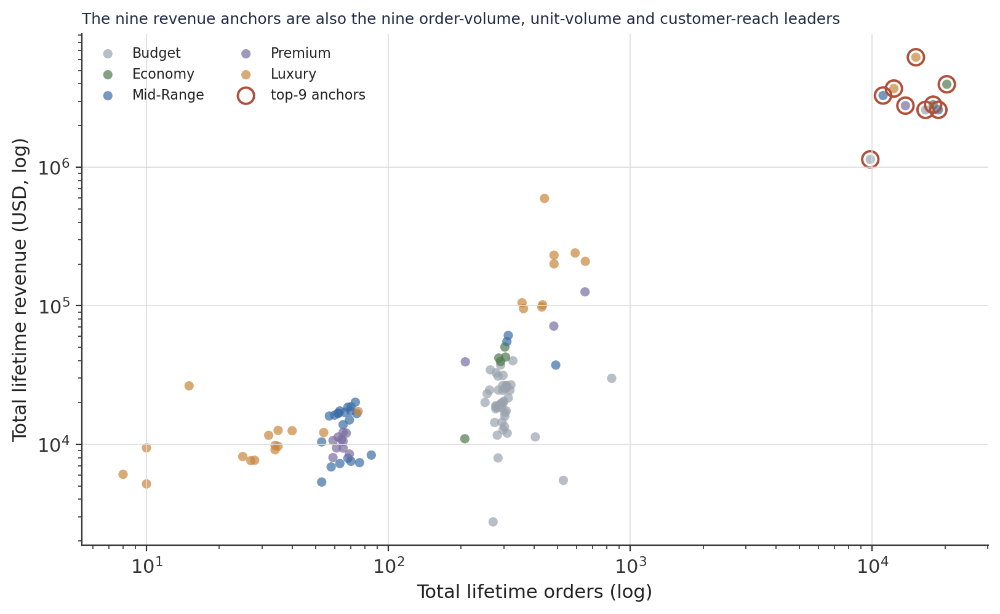
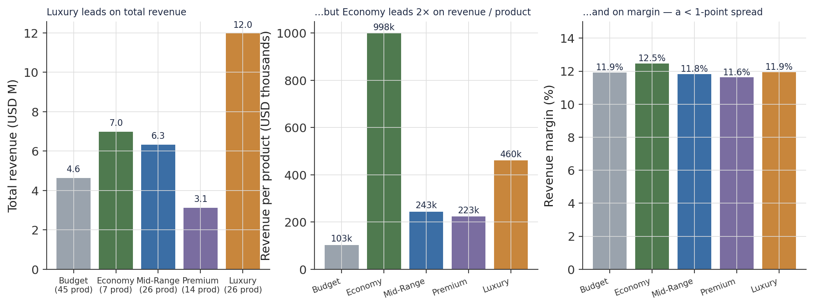
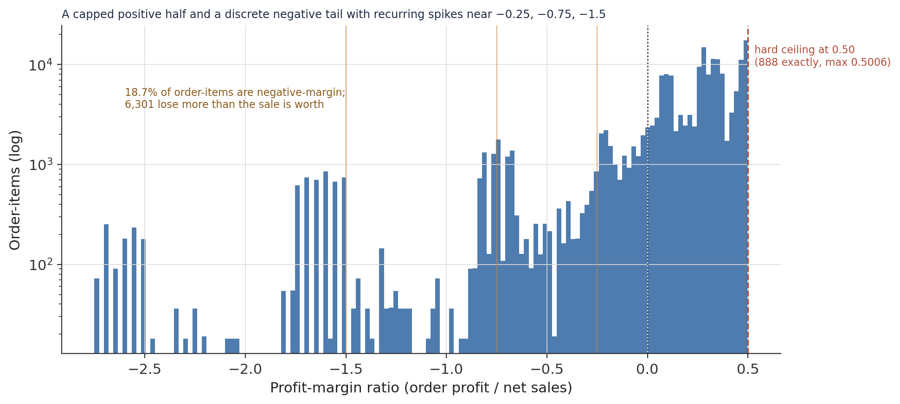
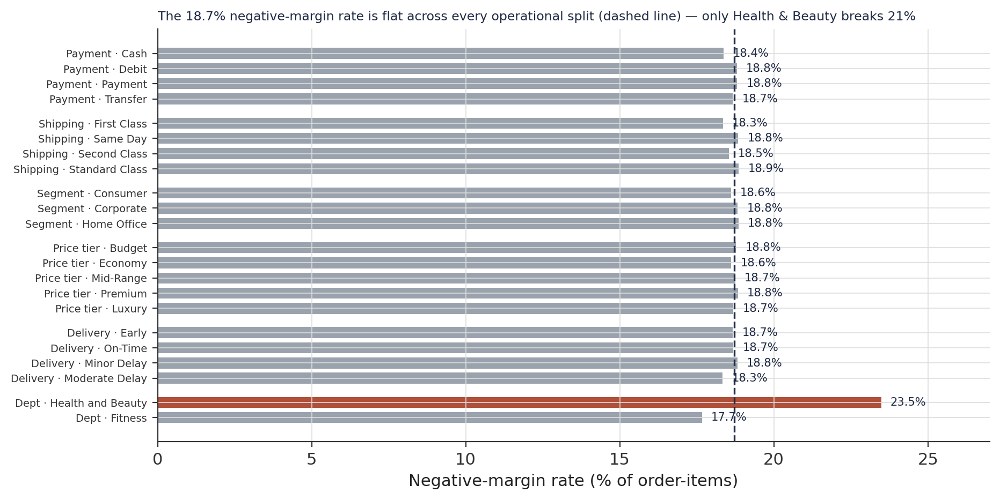
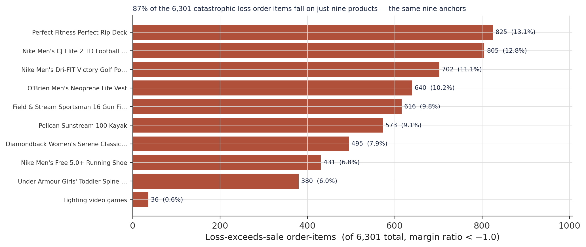
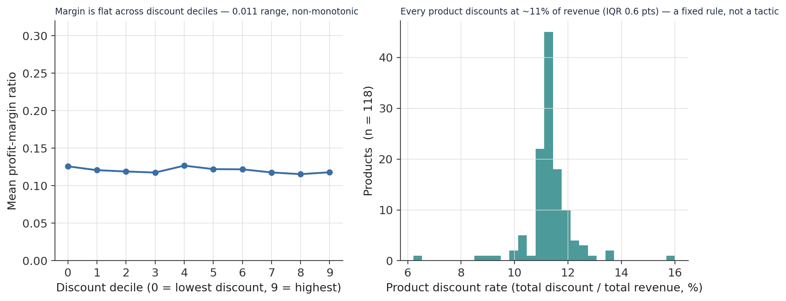
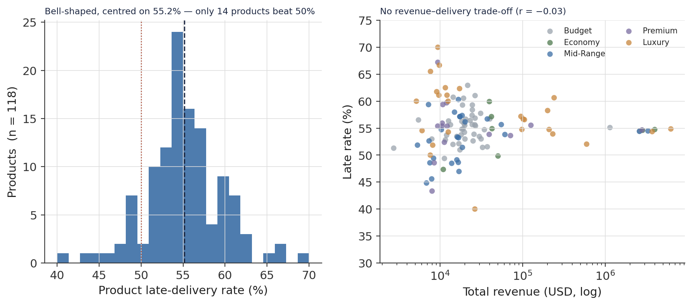
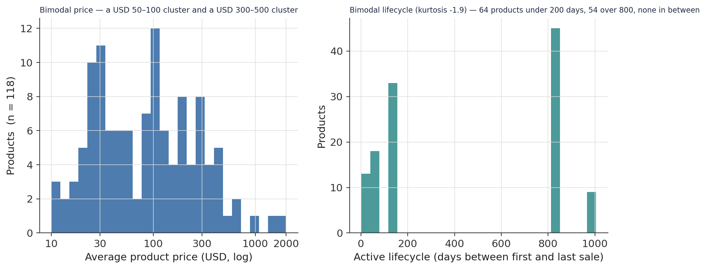
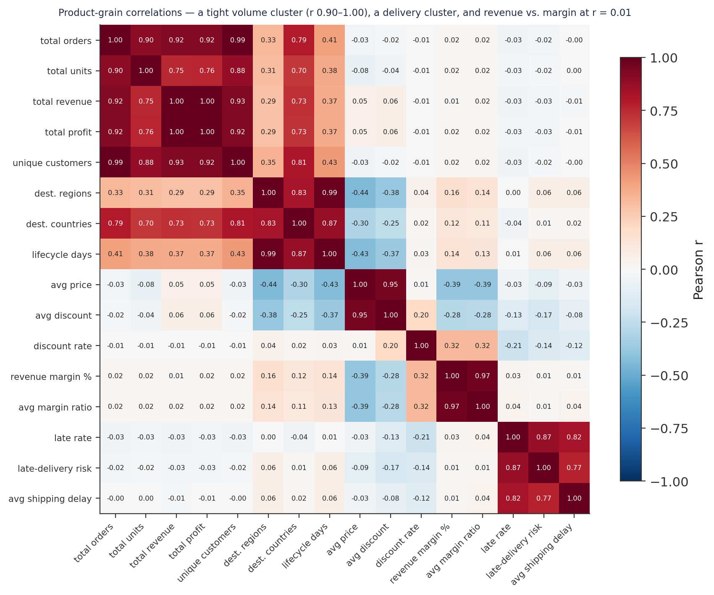

Anchor Concentration and the Economy-Over-Luxury Paradox: A Catalogue Diagnostic for 118 Products
An exploratory product-grain analysis of a three-year e-commerce catalogue — the nine products that carry it, a margin distribution that behaves like an accounting rule, and a price ladder that does nothing for profitability.
A diagnostic of how demand, revenue, and margin distribute across 118 products. Anchor concentration: nine products carry 88% of catalogue revenue; the median product earns $18,461 against a top product’s $6.2M (337×). The Economy-over-Luxury paradox: Luxury (26 products) leads on total revenue, but Economy (7 products) leads 2× on revenue-per-product and on margin — and margin is flat within one point across all five price tiers. A structural margin anomaly: 18.7% of order-items are negative-margin at a rate that is uniform across every operational dimension, and 87% of the catastrophic losses fall on the same nine anchors — the signature of a cost-accounting treatment, not a discounting or fulfilment failure. Discount is not a lever: every product discounts at ~11% of revenue and margin is flat across discount deciles.
product analytics, catalogue diagnostic, revenue concentration, Pareto, profit margin, price tiers, discount analysis, demand distribution, product lifecycle, cost accounting anomaly, exploratory data analysis, Python, pandas
Abstract
This study is a descriptive product-grain analysis of the DataCo e-commerce catalogue — 118 products across 50 categories and 11 departments, characterised from three years of order-item transactions (January 2015 – January 2018). The objective is to map how demand, revenue, and margin distribute across the catalogue. The analytical table is the validated Gold layer of a companion medallion pipeline; every measure is recomputed from it. Three findings define the catalogue. Revenue is concentrated in fewer than ten products: the top nine carry 88.2% of the $33.1M total, the median product earns $18,461 against a top product’s $6.23M (a factor of 337), and the same nine products lead on every metric that scales with volume. The price ladder does not price: Luxury (26 products) leads on total revenue at $12.0M, but Economy (7 products) leads on revenue per product at $998,000 — more than double Luxury’s $460,000 — and on margin at 12.5%; across all five tiers the margin spread is under one point. The margin distribution behaves like an accounting rule: the order-item profit-margin ratio has a hard ceiling at 0.50, 18.7% of order-items are negative-margin at a rate uniform across payment type, shipping mode, customer segment, price tier, and delivery outcome (18.3%–18.9%), and 87% of the 6,301 loss-exceeds-sale order-items fall on the same nine anchor products — consistent with a source-system cost revaluation applied to high-volume lines rather than a discounting or fulfilment failure. Discounting is a fixed ~11%-of-revenue rule with no margin gradient. Delivery is uniform: mean product late rate 55.2%, bell-shaped, no revenue trade-off. No causal claim is made.
Keywords: product analytics, revenue concentration, Pareto, profit margin, price tiers, discount analysis, cost-accounting anomaly
Introduction
The companion operations and customer studies of this dataset examined how orders flow and who places them. This study turns to the catalogue — the 118 products themselves, each treated as an entity with its own demand history, margin profile, delivery record, and customer reach, derived directly from the 180,519-line transaction record.
The unit of analysis is the product. Every field is aggregated from the transaction stream to one row per product. That grain reveals structure invisible at coarser levels: a catalogue of 118 items is not 118 comparable businesses but a handful of blockbusters and a long tail of diversity lines, and the difference between the two is a factor of hundreds on every commercial metric.
Two findings recur across every section. The first is concentration: revenue, orders, units, and customer reach all collapse onto the same nine products. The second is structural uniformity: margin, discount rate, and delivery performance are near-constant across the catalogue, unmoved by price, category, or volume — which means the levers that would normally shape a product’s economics are, in this business, not doing so.
Method
Data source
Two tables. product_features_gold (118 rows × 38 columns), one row per product with no missing values in any field. fact_logistics_gold (180,519 rows × 44 columns) at order-item grain, used for the transaction-level margin and discount distributions. The catalogue spans 50 categories, 11 departments, and five price tiers — Budget (45 products), Economy (7), Mid-Range (26), Premium (14), Luxury (26). Over the observation window it generated $33,054,402 in revenue and $3,966,903 in profit — a 12.0% overall margin.
Variables and measures
Demand: total_orders, total_units, n_unique_customers. Profitability: total_revenue, total_profit, revenue_margin_pct (= profit ÷ revenue × 100), and avg_margin_ratio (the mean of the order-item profit_margin_ratio, itself order profit ÷ net sales). Pricing: avg_price, price_tier. Discount: avg_discount (mean dollar discount) and discount_rate (total discount ÷ total revenue). Fulfilment: late_rate, avg_late_delivery_risk, avg_shipping_delay. Lifecycle: lifecycle_days (first to last sale), recency_days (days since last sale). Quintile labels demand_bucket and margin_bucket are also carried.
Analytical approach
Descriptive. Distributions are summarised for the demand, revenue, margin, discount, delivery, and lifecycle families; concentration is quantified with cumulative revenue shares. The negative-margin anomaly is investigated by cross-tabulating the order-item negative-margin flag against every operational dimension, then decomposing the extreme-loss subgroup (margin ratio < −1.0) by product. Discount effect is tested with a decile analysis of margin at transaction grain and a product-grain scatter. Pairwise Pearson correlations span 16 product features. No model is fitted; a target-viability scan is summarised in the Discussion.
Software
Python 3.10 with pandas, numpy, and matplotlib.
Results
Anchor concentration
Revenue is not spread across 118 products; it sits in nine (Figure 1). The top nine products carry 88.2% of the $33.1M catalogue revenue; the top product — the Field & Stream Sportsman 16 Gun Fire Safe — alone accounts for 18.8% ($6.23M). The median product earns $18,461, so the top product outsells the median by a factor of 337. The distribution has no middle: a product is a high-velocity engine or a long-tail diversity line, with almost nothing between. The same nine products lead on total orders (top product 20,359 vs. median 282), total units, and unique customer reach (top product 10,046 customers vs. median 280) — one cluster of blockbusters visible at the top of every volume distribution (Figure 2). They span all five price tiers (Table 1), so the concentration is not a pricing effect.
Table 1
The Nine Anchor Products
| Product | Price tier | Orders | Revenue | Margin | Late rate | Customers |
|---|---|---|---|---|---|---|
| Field & Stream Sportsman 16 Gun Fire Safe | Luxury | 15,164 | $6.23M | 12.1% | 54.9% | 8,759 |
| Perfect Fitness Perfect Rip Deck | Economy | 20,359 | $3.97M | 12.4% | 54.7% | 10,046 |
| Diamondback Women’s Serene Classic bike | Luxury | 12,299 | $3.70M | 11.6% | 54.4% | 7,788 |
| Nike Men’s Free 5.0+ Running Shoe | Mid-Range | 11,092 | $3.30M | 11.5% | 54.5% | 7,377 |
| Nike Men’s Dri-FIT Victory Golf Polo | Economy | 17,869 | $2.83M | 12.4% | 54.6% | 9,468 |
| Pelican Sunstream 100 Kayak | Premium | 13,727 | $2.79M | 11.6% | 54.7% | 8,277 |
| Nike Men’s CJ Elite 2 TD Football Cleat | Mid-Range | 18,783 | $2.60M | 12.0% | 54.4% | 9,717 |
| O’Brien Men’s Neoprene Life Vest | Budget | 16,623 | $2.60M | 12.3% | 54.5% | 9,134 |
| Under Armour Girls’ Toddler Spine Surge shoe | Budget | 9,825 | $1.14M | 11.1% | 55.1% | 6,774 |
| These nine | all 5 tiers | $29.1M (88.2%) | ~12% | ~55% |
Note. Median product across the full catalogue: 282 orders, $18,461 revenue, 280 customers.
Figure 1
Product Revenue: Top 15 and the Cumulative Curve

Note. The top product ($6.23M) is 337× the median ($18,461). The nine amber bars are the “anchor” set referenced throughout.
Figure 2
Total Orders Versus Total Revenue (log–log), by Price Tier

Note. The nine revenue anchors are also the nine order-volume, unit-volume, and customer-reach leaders — a single collinear cluster.
The Economy-over-Luxury paradox
The catalogue’s price ladder separates products by price but not by economics (Figure 3). Luxury (26 products) generates the most total revenue at $12.0M, as designed. But Economy — only 7 products — generates the most revenue per product at $998,000, more than double Luxury’s $460,000, and carries the highest revenue margin at 12.5%. Across all five tiers the margin runs 11.6%–12.5% — a spread under one percentage point. Pricing higher does not lift margin; pricing lower does not compress it. Premium occupies the weakest position: fewest orders (15,704), lowest margin (11.6%), second-lowest total revenue. Whether the seven Economy products are an underexploited template or seven non-generalising outliers is the open strategic question the data raises but cannot settle (Table 2).
Table 2
Financials by Price Tier
| Price tier | Products | Total revenue | Revenue / product | Order volume | Revenue margin |
|---|---|---|---|---|---|
| Budget | 45 | $4.64M | $103,000 | 39,902 | 11.9% |
| Economy | 7 | $6.99M | $998,000 | 39,620 | 12.5% |
| Mid-Range | 26 | $6.33M | $243,000 | 32,374 | 11.8% |
| Premium | 14 | $3.12M | $223,000 | 15,704 | 11.6% |
| Luxury | 26 | $11.97M | $460,000 | 32,163 | 11.9% |
Note. Luxury leads on total revenue; Economy leads on revenue per product and margin. The full-tier margin spread is 0.9 points.
Figure 3
Price Tier: Total Revenue, Revenue per Product, and Margin

Note. Economy figures rest on only 7 products and should be read with that caveat; the near-flat margin panel does not.
The margin distribution behaves like an accounting rule
At order-item grain, the profit-margin ratio has a shape no organic pricing-and-cost process would produce (Figure 4). The positive half rises smoothly to a hard ceiling at 0.50 — 888 order-items land exactly on it, the absolute maximum is 0.5006. The negative half is a discrete comb: recurring spikes at round values near −0.25, −0.75, and −1.50 rather than a smooth tail. 18.7% of all order-items (33,784) are negative-margin, and 6,301 lose more than the sale is worth (ratio < −1.0), with 1,190 below −2.0.
Cross-tabulating the negative-margin flag against every operational dimension returns a flat line (Figure 5). The rate is 18.4%–18.8% by payment type, 18.3%–18.9% by shipping mode, 18.6%–18.8% by customer segment, 18.6%–18.8% by price tier, and 18.3%–18.8% by delivery outcome — a spread under one point on every split. The only exception is at department level, where Health & Beauty records 23.5% against Technology’s 17.7%. No fulfilment pathway, payment method, or customer type explains the negative margins.
Figure 4
Order-Item Profit-Margin Ratio (log count)

Note. 888 order-items sit exactly at 0.50; max 0.5006. 18.7% are negative; 6,301 have ratio below −1.0.
Figure 5
Negative-Margin Rate by Operational Dimension

Note. Dashed line = the 18.7% catalogue rate. The uniformity is the finding.
The extreme-loss subgroup resolves the investigation (Figure 6). Its discount level ($21.05 mean vs. $20.66 dataset-wide), order size (2.11 units vs. 2.13), shipping-mode mix, price-tier mix, and payment mix are all statistically indistinguishable from the full dataset. What is distinctive is the product: 87% of the 6,301 catastrophic-loss order-items fall on just nine products — the same nine anchors. The Perfect Fitness Rip Deck alone carries 825 (13.1%); the Nike CJ Elite football cleat 805; the Nike Dri-FIT polo 702. This is the signature of a cost-accounting treatment — most plausibly wholesale cost revaluations or supplier chargebacks applied to a fixed proportion of high-volume lines in the source system. Any profit-related modelling should treat these order-items as a structurally distinct subpopulation.
Figure 6
Where the Catastrophic Losses Land

Note. Of 6,301 order-items with margin ratio < −1.0, the top nine products account for 86.8%.
Discount is not a lever
Discounting in this catalogue is a fixed rule, not a tactic (Figure 7). Every product discounts at ~11% of revenue — the product-grain discount_rate has an interquartile range of just 0.6 points — even though the dollar discount varies enormously (coefficient of variation 122%). Because discounts are set as a percentage of price, they carry no independent information. Binning all 180,519 order-items into discount deciles, mean margin runs from 0.126 in the lowest-discount decile to 0.118 in the highest — a 0.011 range, and not even monotonic (decile 4 is the highest). There is no margin-erosion gradient. At product grain the correlation between average discount and revenue margin is a weak −0.28, driven mostly by a single high-discount, low-margin category (Computers); it is not a usable relationship.
Figure 7
Discount Has No Effect on Margin

Note. Left: transaction grain, all 180,519 order-items. Right: product grain, discount rate = total discount ÷ total revenue.
Delivery is uniform at the product grain
The operations study found the transaction-level late rate (54.7%) invariant to shipping mode’s promise and destination region. At product grain it is invariant to the product (Figure 8): the mean product late rate is 55.2%, the distribution is bell-shaped — a rarity in this notebook, where nearly every distribution is right-skewed — and only 14 of 118 products beat a 50% late rate. There is no revenue–delivery trade-off (r = −0.03): the nine highest-revenue products sit in the same 53%–56% band as the long tail. late_rate and avg_late_delivery_risk correlate at 0.87; both are structural properties of the fulfilment network, not product attributes. Consistently, 117 of 118 products have Standard Class as their modal shipping mode and Minor Delay as their modal outcome — near-constants at this grain.
Figure 8
Product Late-Delivery Rate: Distribution and Revenue Relationship

Note. Mean 55.2%, median 54.8%, minimum 40.0%. 14 products beat 50%.
The bimodal catalogue
Two structural features of the catalogue are genuinely bimodal (Figure 9). Price clusters at $50–100 and again at $300–500, thinning between $150 and $250 — the catalogue is deliberately segmented into accessible high-frequency items and high-value anchors. Lifecycle is sharper still: 64 products have an active lifecycle under 200 days, 54 have one over 800 days, and not a single product falls between 200 and 800 (kurtosis −1.90). The catalogue is two cohorts — short-window entrants and long-tenured anchors — and any rationalisation analysis has to treat them separately, because their commercial trajectories are not comparable.
Figure 9
Bimodal Structure: Price and Lifecycle

Note. The lifecycle gap (200–800 days) is a hard empty band, not a thin trough.
What connects to what
The product-grain correlation matrix (Figure 10) resolves into four blocks. A volume block — total orders, total units, total revenue, total profit, unique customers, destination regions and countries, lifecycle days — is bound at r = 0.90–1.00 (total_revenue with total_profit at 1.00; total_orders with n_unique_customers at 0.99; lifecycle_days with n_destination_regions at 0.99). A delivery block — late_rate, avg_late_delivery_risk, avg_shipping_delay — is bound at 0.79–0.87. The two blocks are mutually uncorrelated. And the two headline non-relationships are visible as near-white cells: total_revenue with revenue_margin_pct at r = 0.01 (scale does not buy margin) and total_orders with late_rate at r = −0.03 (volume does not buy delivery performance).
Figure 10
Product-Grain Correlation Matrix (16 features)

Note. Pearson r. Any model using more than one volume-block feature must manage the near-perfect collinearity.
Discussion
Principal findings
Three results define the catalogue. First, its commercial outcomes are concentrated in nine products — 88% of revenue, and the top of every volume, reach, and loss distribution. Any decision touching those nine has consequences an order of magnitude larger than the same decision applied to the long tail. Second, the price ladder does not price: margin is flat within a point across all five tiers, revenue-per-product is highest in the smallest tier, and the correlation between revenue scale and margin is zero. Third, the margin distribution is an artefact of the source system, not of operations: a hard 0.50 ceiling, a discrete negative comb, an 18.7% negative-margin rate uniform across every operational split, and 87% of the catastrophic losses concentrated on the nine anchors — all pointing to a cost revaluation or chargeback applied to high-volume lines upstream of anything an operations or pricing team controls.
The mechanism worth naming
The extreme-loss cluster is the sharpest finding. It is not spread thinly across the catalogue in proportion to volume; it is applied to a fixed fraction of a specific set of high-volume products, at round-number margin ratios, with a discount and basket profile identical to healthy transactions. That profile is inconsistent with genuine transaction economics — a real loss on a low-ticket item varies continuously with cost and shipping — and consistent with a batch accounting entry. The practical implication is that margin-improvement work aimed at discounting, fulfilment cost, or basket composition will not move the 18.7% figure. The conversation is with the source-system owners: are these recoverable costs (supplier chargebacks awaiting credit) or realised economic losses? The answer changes the catalogue’s true margin materially, and the data cannot resolve it.
Limitations
The analysis is descriptive; no relationship is shown to be causal. The Economy-tier results rest on 7 products and may not generalise. The profit_margin_ratio values, including the extreme negatives, are taken as recorded — the “accounting treatment” reading is an inference from their structure, not a confirmed mechanism. The final months of the window are truncated at the order-item grain (the same effect documented in the companion studies) and were excluded from any trend reading. lifecycle_days and recency_days carry an observation-window boundary effect: a product still selling in January 2018 has its last-sale date pinned at the boundary regardless of true tenure. Three products are net-loss over their history (SOLE E35 Elliptical −$965, Bushnell Rangefinder −$256, SOLE E25 Elliptical −$170); at product grain the loss otherwise nets out.
Modelling targets
A viability scan of 32 candidate product-grain columns ranks the ordinal buckets highest: price_tier, demand_bucket, margin_bucket, and n_destination_regions score 98/100 (balanced classes, clean signal, no leakage). Continuous delivery and lifecycle targets (avg_shipping_days, recency_days, late_rate, avg_late_delivery_risk) score 95–97. avg_margin_ratio and revenue_margin_pct score ~91 with mild left skew. The volume targets (total_revenue, total_orders, total_units, n_unique_customers) score ~72 — they need a log transform and explicit multicollinearity management, and profit targets additionally need the extreme-loss subpopulation handled separately. The near-degenerate categoricals — preferred_ship_mode, dominant_delivery_type, primary_customer_segment, preferred_transaction_type (each ~99% one class at product grain) — carry no discriminative signal.
Conclusion
This catalogue’s economics are governed by a handful of products, a price structure that does not translate into margin, and a cost pattern that originates in the accounting system rather than the warehouse or the pricing desk. The nine anchors warrant explicit protection in any rationalisation; the margin anomaly warrants a conversation with the source-system owners; and the discount policy, whatever its merits, is not the lever for margin improvement. The companion segmentation and modelling studies build on the same Gold layer.
References
Constante, F., Silva, F., & Pereira, A. (2019). DataCo smart supply chain for big data analysis (Version 5) [Data set]. Mendeley Data. https://doi.org/10.17632/8gx2fvg2k6.5
Harris, C. R., Millman, K. J., van der Walt, S. J., Gommers, R., Virtanen, P., Cournapeau, D., Wieser, E., Taylor, J., Berg, S., Smith, N. J., Kern, R., Picus, M., Hoyer, S., van Kerkwijk, M. H., Brett, M., Haldane, A., del Río, J. F., Wiebe, M., Peterson, P., … Oliphant, T. E. (2020). Array programming with NumPy. Nature, 585, 357–362. https://doi.org/10.1038/s41586-020-2649-2
Pareto, V. (1896). Cours d’économie politique. F. Rouge.
The pandas development team. (2020). pandas-dev/pandas: Pandas (Version latest) [Computer software]. Zenodo. https://doi.org/10.5281/zenodo.3509134
Analysis and figures by the author. A descriptive catalogue study of one dataset; no estimate here supports a causal claim, and the “accounting treatment” reading of the margin anomaly is an inference from the data’s structure, not a confirmed mechanism.